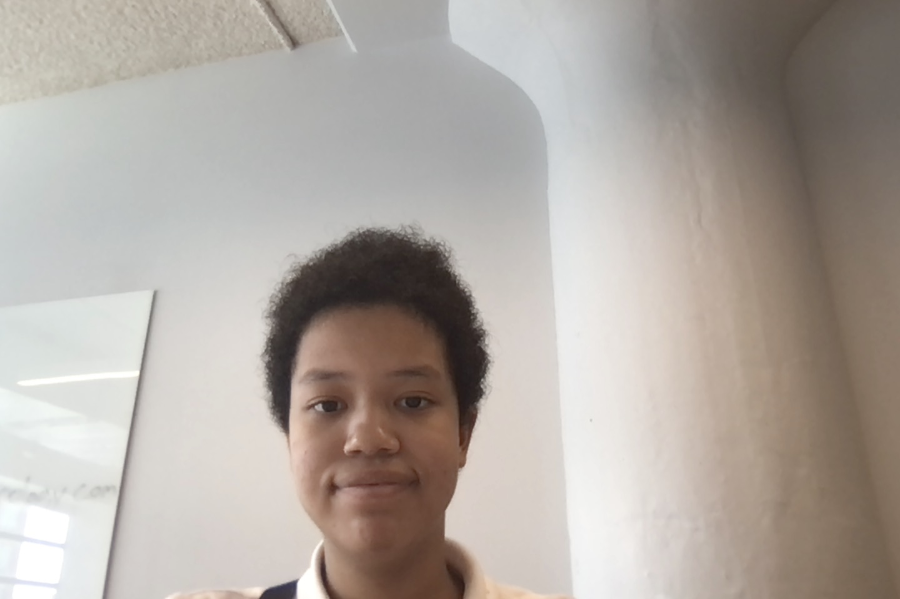

Anna Okage Jasmin
Harvey Irma Maria Nate
Hi, my name is Anna. I'm an 11th grade (junior) high school student in Bedford Academy. My favorite games are Cookie Run Kingdom, Splatoon and Gacha Club.
My favorite subject is science. My favorite topic about it are hurricanes and winter storms in UK.
This year is the 5th annivesary of 4 hurricanes: Harvey, Irma, Maria and Nate. The 2005 hurricane season has more hurricanes than 2020.
Along with the 17th anniversary of Dennis, Katrina, Rita, Stan and Wilma. 2022 is also the 10th anniversary of Superstorm Sandy. This year Fiona and Ian are retired and replace with Farrah and Idris.
My favorite type of cookies in Cookie Run: Kingdom is the Ancient Heroes.